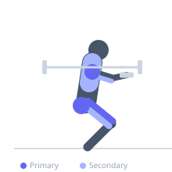
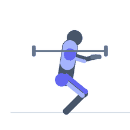

Exercise guide / Thruster
Thruster
The thruster is a full-body compound exercise that combines a front squat with an overhead press in one continuous movement. As the lifter rises from the squat, the momentum is used to drive the bar or dumbbells overhead to lockout. It is widely used in CrossFit and conditioning programs for its exceptional metabolic demand and full-body recruitment, training the quadriceps, glutes, shoulders, and triceps simultaneously.
Primary muscles
rectus femoris
vastus lateralis
vastus medialis
deltoid anterior
gluteus maximus
Secondary muscles
deltoid lateral
triceps lateral head
triceps long head
biceps femoris long head
trapezius upper
Stabilizers
transverse abdominis
iliocostalis
supraspinatus
Equipment
Standard Barbell
Optional
Dumbbell (Fixed)


Starting position
- Hold the barbell in a front rack position (or dumbbells at shoulder height). Feet are shoulder-width apart. This is also the bottom starting position of the front squat.
Setup
- Clean the bar to the front rack position or take from a rack. Ensure adequate ceiling clearance for the overhead lockout. Dumbbells are easier to manage for beginners.
Steps
- Step 1: Begin with the bar in the front rack position, feet shoulder-width apart, elbows high.
- Step 2: Descend into a full front squat — hips below parallel if mobility allows — keeping the torso upright.
- Step 3: Drive explosively out of the squat, extending the hips and knees with maximum force.
- Step 4: Use the upward momentum to press the bar overhead in one continuous motion, finishing at full lockout.
Coaching cues
- Let the squat drive the bar overhead — do not 'squat, pause, then press'
- Keep your elbows high in the front rack — if they drop, you'll muscle-press instead of thruster
Breathing
- Inhale and brace before the squat; exhale at the overhead lockout.
Range of motion
- Full depth squat; full overhead lockout with active shoulders.
Tempo
- Controlled descent; explosive through the top
Common mistakes
- Pausing between the squat and press, breaking the momentum transfer
- Pressing forward rather than straight up at the top
Safety
- Requires front squat mobility — practice front squats and overhead press separately first
- Use bumper plates if doing high-rep sets so you can safely drop the bar
Training
- strength: 3–5 reps
- hypertrophy: 5–10 reps
- endurance: 10–21 reps
- strength: 3–5 sets
- hypertrophy: 3–4 sets
- endurance: 3–5 sets
- Rest: {'strength': 180, 'hypertrophy': 90, 'endurance': 60}